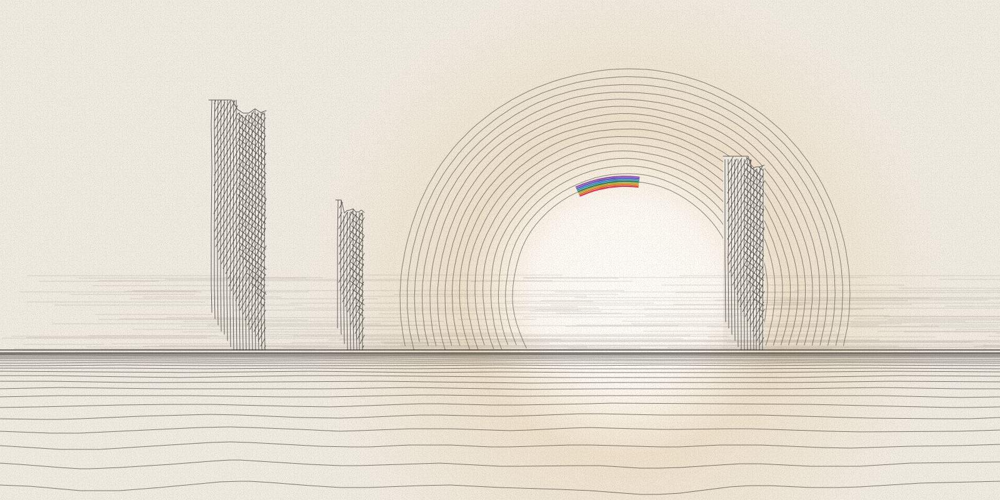
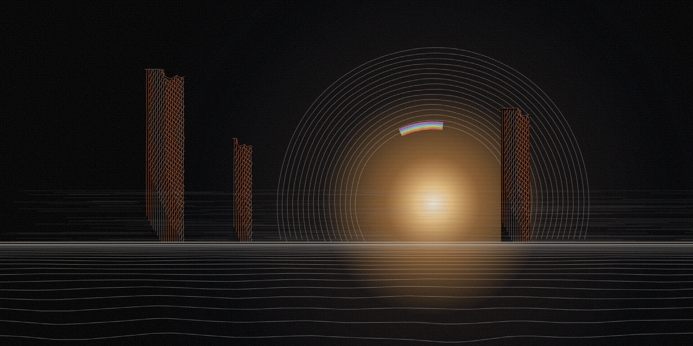

philosophical essay · philosophy
Borrowed Ground
Accepting that we depend on others and must answer to them should keep work open to correction, without turning evidence into authority over people.


In this article
Research summary and limits
Question. What remains binding when we give up the idea of being our own ground?
Finding. The essay links the author's philosophy of received existence, which he calls conferred existence, to responsibility, meaning, privacy and who gets to contribute, drawing on his earlier writing.
Evidence. Selected public manuscripts, the author's essays on why he built his software, his other essays and three video discussions, each linked at the exact version used.
Limit. A personal philosophical argument written with substantial AI help. It does not prove the metaphysics, has had no peer review, and offers no evidence that anyone has solved alignment, the problem of making AI systems reliably do what people intend.
In short
This essay asks what we owe other people when nothing we have was made by us alone, including the language we think in and the tools we use. My answer is that work should stay open to correction, and that checking a claim should not turn into authority over the people it touches; I build software that checks files and records, so this applies to my own tools. It is a personal argument, drawn from my earlier writing and three videos and written with substantial AI help, and the numbered sources at the end show where each cited step comes from so you can inspect it yourself.
An idea should have a door
I want someone to be able to examine my work without first deciding whether I belong in the room.
The wish is practical. I came to this work from outside formal academic training. My papers, software and essays are open to examination, and that alone says nothing about whether they pass it. A public identifier, the permanent catalog number a paper gets when it is deposited, only helps a reader find the paper, and a code repository only gives a reader something to inspect. Neither shows that the paper holds up or that the system works as described. [s1] [s13] [s11]
The distinction matters especially to someone who wants the door opened. Working outside an institution does not excuse me from the labor that starts once I am inside, and I can ask for access while accepting that labor. I have to understand what I claim, lay out the premises, put the help I had on the record and leave enough of my route in place for someone else to find where I went wrong.
In Pick the Lock for Everyone, I wrote about treating a missed route into formal research as a verdict. I had let pedigree become a fact about what I was. That mistake is expensive. It confuses a person's place in an institution with what they might contribute. My response has been to try to build ways for a contribution to be examined on its merits. If I then ask people to accept the work because of the story of how I built it, the response repeats the mistake in a new form. [s1] [s13] [s11]
So the work behind the door has to be something a reader can check for themselves.
The ground I did not make
Conferred Existence, my philosophical manuscript, began with a proposition I called no-aseity. Aseity is an old term from theology for existing entirely from oneself, needing nothing else. No-aseity says that nothing in the conferred order, meaning everything that exists by receiving its existence from something else, stands wholly on its own footing. On this account, existence is received, and it consists in relations. The paper leaves open whether some ultimate, self-sufficient ground exists. The Witnessing Spine, a later paper that joins this philosophy to my engineering work, should not pretend to have settled that dispute among the religious and philosophical traditions it discusses. Part of the idea's pull for me comes from ordinary life. I did not invent the language I think in, and I did not choose the whole history that shaped my attention. The materials I make things with were already here, carrying other people's work. [s2] [s18]
An ideal of complete self-sufficiency can make dependence look like failure. Once dependence is admitted, a different question opens about what responsibility becomes. In the terms of this essay: how do I answer for what I do with what I have received?
Starting from dependence and asking what I owe for what I received is the philosophical wager, and it has to keep the name wager.
Something that depends on other things still exists. The later essays on why I built EMET, a tool that checks whether files have changed and where they came from, say so directly: a thing can depend on an act, a relationship or a condition and still be real. I do not need to conclude that nothing matters because nothing I can find matters entirely by itself. A promise depends on people and practices. Breaking it still has consequences. [s2] [s18] [s5]
Conferred Existence, in its integrated edition, corrects its own most ambitious argument, and the correction is substantial. It separates an event that happens at a place and time from a stronger claim: that such an event establishes the inhabited standpoint, a lived point of view, that the paper's wider thesis requires. It admits that the stronger claim remains unproven. The explanatory gap is the old puzzle of how physical processes relate to lived experience. The paper had claimed to relocate that gap: philosophers had long placed it in consciousness itself, and the paper put it in a relation between two states. The paper also runs its own demarcation test, a test for telling a genuine result apart from a redescription, which restates something in new words. By that test, the relocation counts as a redescription. The paper withdraws a stronger claim about chaos and agency as well: that chaos theory, the mathematics of systems that small changes can push far off course, gives its argument about free agency full mathematical force. Those passages belong near the center of any account I now give of the work. [s2] [s18]
I still think the synthesis, the joining of this philosophy to my engineering, is worth pursuing. Pursuing it responsibly means letting the correction change its status. One comparison in it sets the unproven assumption beneath a cryptographic security proof, that some mathematical problem is hard to solve, beside the way everything in the conferred order depends on something else for its existence. An analogy like that can teach something about both. Showing that the two are literally the same structure takes an argument, and describing them in the same language does not supply one.
Here the philosophy has to bind its author. I have argued that nothing warrants itself, so I cannot let smooth writing serve as the warrant for my argument.
Meaning I have to take part in
The later meaning chapter of Conferred Existence pulls apart two questions that everyday speech keeps close together. The first is what a sign or sentence refers to. The second is what matters to someone. The chapter grants, provisionally, that an account of reference might not need an inhabited standpoint, and then argues that an account of mattering does. The chapter proposes this distinction. It still owes an argument to anyone who thinks significance can be fully explained in other terms. [s2] [s14]
The distinction helps me name a practical worry. A record can keep the description of a project without keeping anyone's reason to care about it. A schedule can be full while the work on it has become hard to live inside. More information may help. Another entry in the record will not necessarily tell me what I am doing with my life.
Calling something meaningful does not end the discussion or exempt it from criticism. What absorbs me can harm other people. I can feel a commitment sincerely and still aim it badly. Meaning needs contact with a world that pushes back, including people whose purposes do not fit inside my own. When something matters to me, I still have to work out how to live with it.
It is a relief that I can listen to music without first holding a theory of existence, and show up for a friend without first finding an ultimate foundation. I can take part in what matters while unsure how much of its structure my philosophy has understood, and I need not use that uncertainty as an excuse to stay out of my own life.
Being caused, and being answerable
The question gets harder when I turn it toward responsibility.
An account of how a person came to act can be necessary for understanding what they did, and it can change which protection, repair or response makes sense. The same account can be used to leave the person affected alone with the consequences. I want to keep the explanation and still stop it from swallowing the encounter between the people involved.
The free-will chapter of Conferred Existence tries to keep that encounter in view. Its central concern is the second person, the "you" in a conversation: someone who can address me, dispute my account, refuse my demand or ask something of me in return. Describing a person as a set of causes may serve an explanation. A relationship with that person also includes their standing to answer, meaning their right to reply and to be heard. [s2] [s10]
The chapter argues that no program for shaping behavior can exhaust this standing. A critic can challenge that argument. I should not call it settled because the manuscript records a favorable verdict from its own AI-assisted review process. The practical commitment I take from it is smaller, and harder to keep: I do not want an explanation of another person to become permission to manage them without listening to them. [s2] [s10]
The later essays make this concrete. They insist on keeping intention separate from effect, and on letting the person affected describe what happened without my editing their report into the account I prefer. They also refuse to turn a person into a test suite, a set of automated checks that returns pass or fail. An apology, a boundary and a pattern of changed behavior may each matter. None of them computes a person's moral worth. [s2] [s10]
An accountable relationship needs room for consequences and for a future. Without that room, a record can hold someone forever at the moment it captured.
Making creates obligations
The chapter on made minds, minds that someone built, asks what follows from having made something. Its most useful ethical question holds up through the uncertainty about present AI systems. If a being had interests that count morally, would the fact that somebody produced it settle what that somebody may do to it? [s2] [s8]
My answer in the paper is that creating something can give the creator duties. The act of creation cannot, by itself, settle every question of ownership and standing. This argument is conditional, and it does not establish that a present AI model is conscious. Calling training "growth" or "upbringing" does not establish it either. Those metaphors direct attention and supply none of the missing evidence. [s2] [s8]
An earlier list of open research questions raises the stakes of that condition. Its claims about an AI agent's own standing, what such an agent might be owed, depend on unresolved questions: whether anyone is there at all, and whether the system forms one unified self. If those conditions fail, much of that argument has to fall away. Responsibilities for the work and for its effects on people remain. I want that distinction kept even when the more dramatic possibility draws more attention. [s2] [s8] [s3]
The same discipline applies when the people affected are people whose existence and interests nobody disputes. A tool can change their work, consume their attention, expose their records or make a decision harder to contest. Its creator has responsibilities for those effects. The creator's intentions form only one part of that account.
This is why a tool's purpose matters before I start counting its features. In my later writing, I describe the purpose as returning people to their time. In practice I ask whether someone can finish the work, understand enough to rely on it and go back to their life. I also ask who gets the benefit. If one person saves time and somebody else captures all of it, the outcome differs from saving time that person is free to keep.
These are criteria I want to build toward. Writing them down does not let me claim them as measurements.
A witness has a limited job
The engineering gives me a small place to practice this distinction.
EMET's job is to witness a narrow set of facts about files: whether their contents are intact down to the last byte, and where they came from. Those facts can matter a great deal. A document may have changed. A source can go missing, and a copy can fail to match the thing it names. Knowing that helps someone decide what to examine next. [s2] [s1] [s9]
Permission needs more than that. A document that matches its record can still carry an unauthorized request, and a genuine user account, one that belongs to the person using it, can still make a request beyond its authority. A policy can permit something and still itself deserve moral or institutional criticism. Keeping these questions apart helps stop one successful check from quietly answering all the others.
Security practice already separates authentication, which checks who or what is acting, from authorization, which checks what they may do. My philosophical interest in that separation does not make me its inventor. What I want to contribute is an application of it that anyone can inspect, with the assumptions and failure conditions in plain view. That contribution has to survive being inspected that way.
Flywheel, my software for recording and checking what AI agents do, carries the same aim into agentic work, where AI systems take actions for someone. It asks what was proposed, which materials were available, what action was allowed, what happened, what was checked and what remains unknown. Those questions help only as far as the software can answer them. A receipt for a test run, the saved record that the test ran and what it returned, establishes less than proof that the test measured the right property. A second agent can repeat the first agent's mistake. A fluent explanation written after the event can make an incomplete record sound complete.
The machinery has to stay open to correction at each of those points. The larger philosophy does not supply the missing observations.
The right to an interior
Becoming too pleased with the witness is a danger of its own.
If every demand for accountability becomes a demand for complete access, verification turns into one more route into a person's private life. A person should not have to make their whole interior life visible to support one bounded claim. A record needs a purpose, a scope and a reason for the access it grants. A claim about a document does not justify unrestricted access to its author's correspondence.
I once put it this way: verification without mercy becomes surveillance with better epistemics. Epistemics here means the methods for knowing what is true. I want to keep the difficulty in that sentence in view: someone can read a carefully kept account cruelly or use an accurate record out of proportion, and more visibility does not by itself produce a more humane institution.
The institutions I want would let people challenge decisions, keep the work they need and leave without surrendering their whole history. That is a design commitment and a political hope. It has to be tested against real arrangements, including the ones I create.
Learning enough to answer
AI assistance makes this obligation immediate for me. It can help find a text, organize an argument, write an implementation or spot an objection. It can also make an argument sound like mine before I understand it.
I have written that ownership is earned by comprehension. For a research contribution, ownership means being able to explain which part is mine and which part is inherited. It also means showing where the reasoning rests on a premise, saying what would change my view, and stating what the tools checked. The assistance belongs in the account because it changes how a reader should examine the work. [s10] [s2] [s8] [s1]
I want education to make room for more people to contribute while taking that distinction seriously. For my kind of contribution, a polished answer falls short: I should be able to explain it, revise it and try to use it on an unfamiliar case. I want it to leave room for evidence of process, discussion, reconstruction and correction, and for private thought and for learning that should not be continuously monitored.
I cannot predict the shape or speed of that change in institutions. I can say what I hope it keeps: access that asks for no inherited status, rigor without humiliation, and assistance that increases a person's ability to understand what they are doing.
One of the essays on why I built EMET calls the method a spiral: coming back to the same question from a changed position. I find that a useful description of practice. The next return should bring something the earlier one lacked: an objection understood, a condition noticed, a mistake repaired, or a claim I can no longer defend. Restating a conviction more elegantly brings none of these. [s10] [s2] [s8] [s1] [s6]
The curated discussion log behind Conferred Existence keeps reversals and citation corrections. Some entries record occasions when my preferred conclusion did not survive the research workflow, an AI-assisted review in which a panel of AI agents argued the competing positions and a verifier checked the citations. Those entries remain accounts produced inside the research process, and they do not establish independent scholarly acceptance. For this essay their value is more direct. They leave places where the story cannot honestly be told as unbroken confirmation. [s10] [s2] [s8] [s1] [s4]
Three videos
Three videos, listed in the sources, each pull on a different part of the argument. The first is about how people talk past one another. The second asks what liberation could mean if consequences remain. The third questions, at length, the urge to keep becoming something. I am responding to the lectures and their interpretations, which is a narrower claim than having settled the philosophers they discuss.
A useful story still owes an account
In a video by the YouTube channel zarb comparing the biologist Richard Dawkins and the psychologist Jordan Peterson, the narrator interprets their disagreement through their contrasting intellectual temperaments. Between about seven and ten minutes in, the video stresses the practical, orienting role it attributes to Peterson's account of religious narrative. The video later contrasts concrete and symbolic styles. That contrast is the video's interpretation of two public figures, and it gives no independent evidence about their whole psychology. [s15] [s2]
The question I take from it is what happens when a word changes jobs in the middle of an argument.
People invoke truth to ask whether something happened, whether an explanation is adequate, whether a story helps someone act, or whether a symbol makes an experience intelligible. These questions can bear on one another. A convincing answer to one does not automatically answer the rest. If a story helps me endure a hard event, that help matters. On its own, it does not confirm every historical or metaphysical claim tied to the story.
My own writing is vulnerable here. I put religious language and engineering language side by side. A word such as "conferral" can move between social standing, an act of permission and an account of existence. The movement may clarify something. It becomes evasive if I let one meaning supply an argument that another has not earned.
The obligation runs both ways. A request for evidence should name the claim under examination, and a symbolic account should say when it offers meaning and when it offers evidence that an event took place. I want disagreement precise enough to reach the claim, with enough generosity in it for a person to explain why the claim matters to them.
Understanding does not put me outside the consequences
A lecture video on the YouTube channel essentialsalts takes up the Japanese philosopher Nishitani and Baizhang's Fox, a Zen teaching story called a koan. It develops a reading in which liberation does not simply exempt the practitioner from cause and effect. The lecture moves from the fox koan into the way people live with responsibility, burden and compassion. About an hour in, taking up responsibility becomes central to its account of release. This is the lecturer's interpretation of a difficult religious text and tradition, and it should stay attributed to the lecture. [s17] [s2] [s11]
That reading presses on an idea already present in Conferred Existence: dependence and answerability can exist together.
I can understand more about the conditions that produced an action and still have to face the person it affected. Understanding those conditions might help me change them. It might make some responses more fitting and others less so. It gives me no private balcony above the event, where I could declare the event necessary while someone else does the repairing.
The same holds for insight about the self. Suppose I use a philosophy of the conditioned self, the view that the self is produced by conditions, to shield my preferred account from correction. The philosophy has then become one more defense of that self, whatever it says about groundlessness. In practice I would keep the authority to interpret, and the consequences would fall on somebody else.
I want an explanation to send me back to the encounter, better able to listen and act. A good explanation helps me respect a boundary and accept a correction, and it makes a harmful condition easier to change. People can examine those effects without first agreeing with my metaphysics.
The lecture also discusses a burden that has no limit, and that calls for a distinction in my own work. Compassion can orient a life without making one person competent or authorized to decide for everyone. I can care about the scale of suffering and still name the limited task in front of me. A broad concern has to become particular work, with particular people able to answer back.
Here the ambition to build for everyone has to answer to the person using what I built. That person should be able to refuse it, contest its account and get the tool corrected without first showing loyalty to me. A claim to build for everyone has to hold in each of those cases.
What happens when wanting takes a breath
A lecture video on the essentialsalts channel about the German philosopher Arthur Schopenhauer presents striving and suffering as linked. It then develops aesthetic attention as a temporary pause in willing, a state in which the viewer becomes what the lecture calls a "pure will-less subject". It treats renunciation, giving up willing itself, as going further than the satisfaction of one more desire. The lecture also admits that Schopenhauer's metaphysics of will, his view that reality at bottom is a restless striving he called will, comes under pressure where he derives it from bodily experience. I take the questions it raises seriously without treating the whole metaphysical account as established. [s16] [s11] [s8] [s12] [s14]
I recognize the pattern of making the next achievement responsible for ending the demand to achieve. In the later essays, I describe wanting a project to repay every lost year. A useful piece of work cannot carry that debt. I can finish it and at once demand that it prove something larger about me. The demand simply moves on to the next object. [s16] [s11] [s8] [s12] [s14]
That recognition matters for how I build tools. A product built around the next return, the next interruption and the next reason to stay can make that pattern part of how it runs. I want to ask whether the relationship allows completion. Is there a point where the tool has done what was asked, the account is clear enough, and the person is free to turn their attention elsewhere?
Art is one place where I can attend to something without making its value depend on what it gives me back. An artwork may still need context, labor or economic support. The experience should have room to go beyond my plan for using it.
This also limits the verification project. A process record can help establish who contributed, which materials were used, or what changed between versions. It cannot stand in for the encounter with the work. Being able to keep a record gives me no machine for deciding what a piece of music must mean to another listener.
The practical direction I take from the lecture is to loosen the demand that every experience become a possession and every contribution become a verdict on the person who made it. I still want to make things. I want the making to leave more room for the life around it.
The objection the tools cannot answer for me
A critic can accept the practical distinctions and reject the metaphysics. Authentication and authorization need to be kept apart for ordinary engineering reasons. An outside check can catch a mistake without establishing any thesis about the ground of existence. Several fields can hold problems with a similar structure that remain different problems. One shared vocabulary does not close the distance between them.
That objection reaches the central ambition of Conferred Existence and of The Witnessing Spine. The Witnessing Spine traces a gap through four levels of work: research, philosophy, algebra and a software tool. Its central claim is that these are one and the same gap, and the paper calls that claim a synthesis and a bid, declining to call it a proof. I have to keep that status in place when the bid is doing work I care about. A working tool cannot settle the metaphysics by association, and a philosophical conviction cannot certify the tool.
Dependence alone also cannot tell me what I owe. The ethics needs commitments of its own: that suffering matters, that the people affected have standing to answer, and that creating a vulnerability can give its creator a responsibility to respond. Those commitments need reasons, and they stay open to challenge. I cannot get an obligation by describing a causal relationship and quietly slipping in the permission or duty I wanted to find there.
The word "outside" needs scrutiny too. An observer counts as outside when it stands apart from the particular claim being checked in some relevant respect, and it holds no view from nowhere, no perfectly neutral position. Its instruments can fail, its criteria can fall short and its interests can conflict with those of the person affected. Another agent with the same assumptions may repeat the same mistake. Adding witnesses means paying attention to how they can be wrong together.
Checking also has a cost. A demand for more evidence can become an expense only well-resourced people can meet, and a demand for transparency can expose someone to surveillance. A record that supports correction can also support punishment with no proportion and no appeal. If a system makes its own checks hard to contest, the fix has recreated the unanswerable authority it was meant to check.
These objections give the project work to do, and they do not share one answer. Some call for a better test. Others call for a smaller claim, for privacy, or for a decision that belongs to the people affected. The philosophy earns its place by helping me notice those differences and accept what follows from them. Agreeing with it should never be the price of admission for using the work or challenging its builder.
What survives the builder
The question that connects all of this is what remains binding once I give up the fantasy of being my own ground.
Once I give that up, the people affected are still here, and so is the work that needs doing. So are disagreement, beauty, suffering, dependence and the chance to learn something I did not know how to ask before. A philosophy can help me approach those things. It can also keep them at a manageable distance, so I have to judge what it is doing partly by how I behave while I believe it.
That is why the work should be able to contradict me. A person should be able to use a sound part of it and reject the larger theory. Finding a mistake should not require them to negotiate my identity first. They should be able to leave with the materials they are entitled to keep.
The open door I want into contribution needs enough structure that opening it does not simply shift the cost of checking onto whoever can least afford it. Alongside it I want assistance that leaves people more capable, records that serve a bounded purpose, and institutions whose account can reach the people living with their decisions.
Those commitments need ordinary work behind them: another source read with care, a claim narrowed, a test that can reject the result I wanted, and a useful tool that does its job and lets someone go home.
I did not make the ground I stand on. The answer I give on it is still mine to make, and mine to revise when somebody shows me what that answer has done.
Sources
- A witness should not become a ruler (manuscript, part 1). Zain Dana Harper. Author-attributed public writing or publication record; not independent validation. Publication date unavailable; observed 2026-09-10.
- Conferred Existence (integrated edition). Zain Dana Harper. Author-attributed public writing or publication record; not independent validation. Publication date unavailable; observed 2026-09-10.
- Conferred Existence: five open questions for the next research session. Zain Dana Harper. Author-attributed public writing or publication record; not independent validation. Publication date unavailable; observed 2026-09-10.
- Conferred Existence: curated discussion log. Zain Dana Harper. Author-attributed public writing or publication record; not independent validation. Publication date unavailable; observed 2026-09-10.
- EMET rationale essay: No-aseity. Zain Dana Harper. Author-attributed public writing or publication record; not independent validation. Publication date unavailable; observed 2026-09-10.
- EMET rationale essay: Spiral time. Zain Dana Harper. Author-attributed public writing or publication record; not independent validation. Publication date unavailable; observed 2026-09-10.
- Pick the Lock for Everyone, first edition (manuscript section). Zain Dana Harper. Author-attributed public writing or publication record; not independent validation. Publication date unavailable; observed 2026-09-10.
- No Receipt, No Accept: What the tools owe the people (manuscript section). Zain Dana Harper. Author-attributed public writing or publication record; not independent validation. Publication date unavailable; observed 2026-09-10.
- No Receipt, No Accept: The loop, walked end to end (manuscript section). Zain Dana Harper. Author-attributed public writing or publication record; not independent validation. Publication date unavailable; observed 2026-09-10.
- Pick the Lock for Everyone, third edition: The first black box I learned to exploit (manuscript section). Zain Dana Harper. Author-attributed public writing or publication record; not independent validation. Publication date unavailable; observed 2026-09-10.
- Pick the Lock for Everyone, third edition: The little pipe and the earth beneath it (manuscript section). Zain Dana Harper. Author-attributed public writing or publication record; not independent validation. Publication date unavailable; observed 2026-09-10.
- Pick the Lock for Everyone, third edition: The graph and the poem (manuscript section). Zain Dana Harper. Author-attributed public writing or publication record; not independent validation. Publication date unavailable; observed 2026-09-10.
- Publications page of this site. Zain Dana Harper. Author-attributed public writing or publication record; not independent validation. Publication date unavailable; observed 2026-09-10.
- The Second Hearing (publication record). Zain Dana Harper. Author-attributed public writing or publication record; not independent validation. Publication date unavailable; observed 2026-09-10.
- Intellectually and Temperamentally, Diametrically Opposed (Richard Dawkins vs Jordan Peterson). zarb. Video interpretation; subtitle evidence, not original philosopher text. Publication date unavailable; observed 2026-09-10.
- Schopenhauer In-Depth: The Total Denial of the World by the Greatest Pessimist of Philosophy. essentialsalts. Video interpretation; subtitle evidence, not original philosopher text. Publication date unavailable; observed 2026-09-10.
- Nishitani & Baizhang's Fox. essentialsalts. Video interpretation; subtitle evidence, not original philosopher text. Publication date unavailable; observed 2026-09-10.
- The Witnessing Spine (synthesis paper). Zain Dana Harper. Author-attributed public writing or publication record; not independent validation. Publication date unavailable; observed 2026-09-10.
Claim notes and limitations
The author argues that work should remain open to correction while preserving the standing and privacy of people affected.
Sources: s1, s2, s3, s4, s5, s6, s7, s8, s9, s10, s11, s12, s13, s14, s15, s16, s17, s18
- Scope
- The philosophical and practical argument developed in this essay.
- Uncertainty
- Dependence alone does not establish an ethical obligation; the metaphysical synthesis and conditional made-mind claims remain contestable.
- Does not prove
- Metaphysical truth, present AI consciousness, independent scholarly validation, tool effectiveness or solved alignment.
Corrections
No corrections recorded.